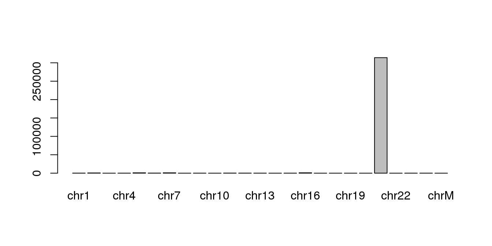
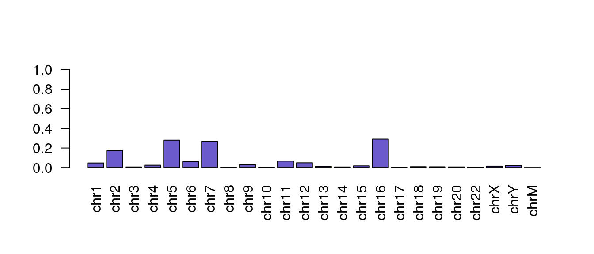

2.2 Mapping
Once the reads have been quality checked and trimmed, the next step is to map the reads to the reference genome (in our case the human genome “hg19”). This can be done with the Bioconductor package Rsubread .
Before mapping the reads to the reference genome you will need to build a Rsubread index for that genome. Below are the commands for building an index for the human reference genome using the buildindex command.
PLEASE DO NOT RUN the buildindex() code in the workshop as this can take awhile. We have already build the index for you.
library(Rsubread)buildindex(basename=file.path(RSUBREAD_INDEX_BASE, RSUBREAD_INDEX_PATH), reference=REF_GENOME)
Once the Rsubread index has been created you can map your reads to the genome by running the align command. The code below could be used to map the reads for a specific library against the “hg19” genome.
library(Rsubread)
sample <- "ERR420386"
inputFileFWD <- file.path(RNASeq_DATA_DIR, paste0(sample,"_chr21_R1.fastq.gz"))
inputFileRVS <- file.path(RNASeq_DATA_DIR, paste0(sample,"_chr21_R2.fastq.gz"))
output.bamFile <- file.path(MAPPING_DIR, paste0(sample,".bam"))
inputFileFWD
inputFileRVS
output.bamFile## [1] "../data/RNAseq/raw_data/ERR420386_chr21_R1.fastq.gz"
## [1] "../data/RNAseq/raw_data/ERR420386_chr21_R2.fastq.gz"
## [1] "results/RNAseq/mapping/ERR420386.bam"For the purpose of this workshop the mapping has already been done. This step can take up to a couple of hours per library.
Please only run the following command using the subset sample *_chr21_R1.fastq.gz, which is much smaller.
align(index = file.path(RSUBREAD_INDEX_PATH, RSUBREAD_INDEX_BASE),
readfile1 = inputFileFWD,
readfile2 = inputFileRVS,
input_format = "gzFASTQ",
output_file = output.bamFile,
output_format = "BAM")##
## ========== _____ _ _ ____ _____ ______ _____
## ===== / ____| | | | _ \| __ \| ____| /\ | __ \
## ===== | (___ | | | | |_) | |__) | |__ / \ | | | |
## ==== \___ \| | | | _ <| _ /| __| / /\ \ | | | |
## ==== ____) | |__| | |_) | | \ \| |____ / ____ \| |__| |
## ========== |_____/ \____/|____/|_| \_\______/_/ \_\_____/
## Rsubread 1.24.2
##
## //========================== subread-align setting ===========================\\
## || ||
## || Function : Read alignment (RNA-Seq) ||
## || Input file 1 : ../data/RNAseq/raw_data/ERR420386_chr21_R1.fastq.gz ||
## || Input file 2 : ../data/RNAseq/raw_data/ERR420386_chr21_R2.fastq.gz ||
## || Output file : results/RNAseq/mapping/ERR420386.bam (BAM) ||
## || Index name : ../data/RNAseq/ref_data/RsubreadIndex/hg19 ||
## || ||
## || ------------------------------------ ||
## || ||
## || Threads : 1 ||
## || Phred offset : 33 ||
## || # of extracted subreads : 10 ||
## || Min read1 vote : 3 ||
## || Min read2 vote : 1 ||
## || Max fragment size : 600 ||
## || Min fragment size : 50 ||
## || Maximum allowed mismatches : 3 ||
## || Maximum allowed indel bases : 5 ||
## || # of best alignments reported : 1 ||
## || Unique mapping : yes ||
## || ||
## \\===================== http://subread.sourceforge.net/ ======================//
##
## //================ Running (12-Apr-2017 20:38:48, pid=31533) =================\\
## || ||
## || The input file contains base space reads. ||
## || The range of Phred scores observed in the data is [2,40] ||
## || Load the 1-th index block... ||
## || 4% completed, 0.2 mins elapsed, rate=4.1k fragments per second ||
## || 10% completed, 0.2 mins elapsed, rate=4.1k fragments per second ||
## || 17% completed, 0.3 mins elapsed, rate=4.1k fragments per second ||
## || 24% completed, 0.3 mins elapsed, rate=4.1k fragments per second ||
## || 30% completed, 0.4 mins elapsed, rate=4.1k fragments per second ||
## || 37% completed, 0.4 mins elapsed, rate=4.1k fragments per second ||
## || 44% completed, 0.5 mins elapsed, rate=4.0k fragments per second ||
## || 50% completed, 0.5 mins elapsed, rate=4.0k fragments per second ||
## || 57% completed, 0.5 mins elapsed, rate=4.0k fragments per second ||
## || 64% completed, 0.6 mins elapsed, rate=4.0k fragments per second ||
## || 69% completed, 0.6 mins elapsed, rate=3.0k fragments per second ||
## || 73% completed, 0.6 mins elapsed, rate=3.1k fragments per second ||
## || 76% completed, 0.7 mins elapsed, rate=3.2k fragments per second ||
## || 80% completed, 0.7 mins elapsed, rate=3.2k fragments per second ||
## || 83% completed, 0.7 mins elapsed, rate=3.3k fragments per second ||
## || 86% completed, 0.7 mins elapsed, rate=3.4k fragments per second ||
## || 90% completed, 0.7 mins elapsed, rate=3.5k fragments per second ||
## || 93% completed, 0.7 mins elapsed, rate=3.5k fragments per second ||
## || 96% completed, 0.7 mins elapsed, rate=3.6k fragments per second ||
## || ||
## || Completed successfully. ||
## || ||
## \\============================================================================//
##
## //================================= Summary ==================================\\
## || ||
## || Processed : 161,297 fragments ||
## || Mapped : 160,518 fragments (99.5%) ||
## || Correctly paired : 126,376 fragments ||
## || Indels : 2,635 ||
## || ||
## || Running time : 0.7 minutes ||
## || ||
## \\===================== http://subread.sourceforge.net/ ======================//
The nthreads parameter can be used in the align command to speed up the process and run the alignment using several CPUs in parallel.
The function propmapped returns the proportion of mapped reads in the output SAM file: total number of input reads, number of mapped reads and proportion of mapped reads.
propmapped(output.bamFile)## The input file is opened as a BAM file.
## The fragments in the input file are being counted.
## Finished. All records: 322594; all fragments: 161297; mapped fragments: 160518; the mappability is 99.52%## Samples NumTotal NumMapped PropMapped
## 1 results/RNAseq/mapping/ERR420386.bam 161297 160518 0.99517
You can run the propmapped() on multiple bam files to return a summary of the total number of reads per file and the number of reads that were mappable or unmappable. However, this can take a very long time to run for big bam files.
PLEASE DO NOT RUN
For example:
all.bam.files <- grep(‘.bam’,dir(‘../data/RNAseq/mapping’,full.names = T),value=T)
pm <- propmapped(all.bam.files)
2.2.1 Examining the mapped reads
Create a BamFile object and load the file into memory so we can interact with it and find out some information. The seqinfo() function outputs the headding information, in this exercise, this is the
library(Rsamtools)
bf <- BamFile(output.bamFile)
seqinfo(bf)## Seqinfo object with 25 sequences from an unspecified genome:
## seqnames seqlengths isCircular genome
## chrM 16571 <NA> <NA>
## chr1 249250621 <NA> <NA>
## chr2 243199373 <NA> <NA>
## chr3 198022430 <NA> <NA>
## chr4 191154276 <NA> <NA>
## ... ... ... ...
## chr20 63025520 <NA> <NA>
## chr21 48129895 <NA> <NA>
## chr22 51304566 <NA> <NA>
## chrX 155270560 <NA> <NA>
## chrY 59373566 <NA> <NA>We can take a closer look and find out how many of the reads map to each chromosome. To do this, we need to first sort and index the bam file.
output.sorted.bamFile <- file.path(MAPPING_DIR,paste0(sample, '.sorted'))
sortBam(output.bamFile, output.sorted.bamFile)## [1] "results/RNAseq/mapping/ERR420386.sorted.bam"output.sorted.bamFile <- paste0(output.sorted.bamFile, ".bam")
indexBam(output.sorted.bamFile)## results/RNAseq/mapping/ERR420386.sorted.bam
## "results/RNAseq/mapping/ERR420386.sorted.bam.bai"dir(MAPPING_DIR, full.names=T)## [1] "results/RNAseq/mapping/ERR420386.bam"
## [2] "results/RNAseq/mapping/ERR420386.bam.indel"
## [3] "results/RNAseq/mapping/ERR420386.sorted.bam"
## [4] "results/RNAseq/mapping/ERR420386.sorted.bam.bai"output.bam.index <- dir(MAPPING_DIR, full.names=T)[grep(".bai",dir(MAPPING_DIR))]
output.bam.index## [1] "results/RNAseq/mapping/ERR420386.sorted.bam.bai"Once the index bam file has been created, we can find out the number of mapped reads per chromosome:
chr.mapping.stats <- idxstatsBam(output.bamFile, index=output.bam.index)
chr.mapping.stats## seqnames seqlength mapped unmapped
## 1 chr1 249250621 150 0
## 2 chr2 243199373 559 0
## 3 chr3 198022430 20 0
## 4 chr4 191154276 79 0
## 5 chr5 180915260 892 0
## 6 chr6 171115067 200 0
## 7 chr7 159138663 850 0
## 8 chr8 146364022 7 0
## 9 chr9 141213431 101 0
## 10 chr10 135534747 10 0
## 11 chr11 135006516 212 0
## 12 chr12 133851895 155 0
## 13 chr13 115169878 42 0
## 14 chr14 107349540 19 0
## 15 chr15 102531392 56 0
## 16 chr16 90354753 924 0
## 17 chr17 81195210 6 0
## 18 chr18 78077248 27 0
## 19 chr19 59128983 24 0
## 20 chr20 63025520 20 0
## 21 chr21 48129895 314047 0
## 22 chr22 51304566 15 0
## 23 chrX 155270560 46 0
## 24 chrY 59373566 66 0
## 25 chrM 16571 0 0This is easiest to view as a plot:
rownames(chr.mapping.stats) <- chr.mapping.stats$seqnames
barplot(chr.mapping.stats$mapped,
names.arg=as.character(chr.mapping.stats$seqnames))
Mapping percentage
Using a barplot, can you find out which other chromsome has the highest number of mapped reads?
Hint: repeat the barplot but without the bar for chr21.

Solution
total.mapped.reads <- sum(chr.mapping.stats\(mapped)</code><br /> <code>chr.mapping.stats\)mapped.prop <- chr.mapping.stats\(mapped/total.mapped.reads*100</code><br /> <code>barplot(chr.mapping.stats\)mapped.prop[-21],
names.arg=chr.mapping.stats$seqnames[-21],
las=2, col=‘slateblue’, ylim=c(0,1))